영화김정수필름 영화 4편
웹툰 사이사이에 놓인 실사 영화 · 옆으로 넘겨 보세요 →
01나사로 프로젝트
죽은 딸을 되살린 실험. 모자란 기억은 다른 죽은 사람으로 채웠다.

02기름도둑
버리는 것은 하나도 없다. 사람은 기름이 되었고, 남매는 그 기름을 훔쳤다.
03골디락스존 프로젝트
바이러스가 공기를 타고, 하늘로 가는 호출기를 두고 사람들이 싸웠다.

04제2지구 골디락스존
1인용 우주선을 타고 하늘 위로. 그리고 골디락스호의 진실.

인물등장인물
웹툰과 영화를 잇는 사람들 · 옆으로 넘겨 보세요 →
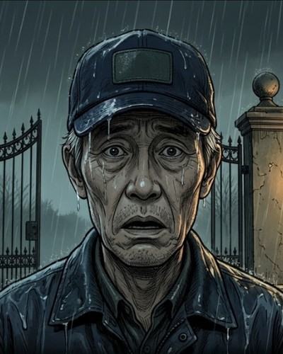
오정근골디락스 저택의 야간 경비원. 아내를 잃은 밤, 금지된 서류를 열었다.웹툰 오리지널첫 등장 1화 →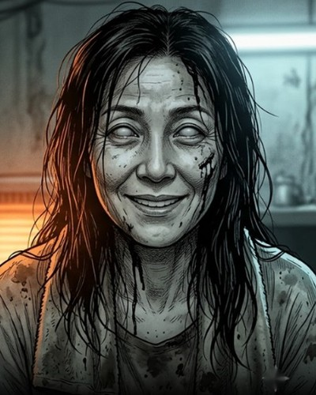
한미숙정근의 아내, 준호의 엄마. 자기 전마다 노래를 불러 주던 사람.웹툰 오리지널첫 등장 1화 → 준호정근의 아들. 엄마의 노래를 기억하는 아이, 그리고 기름공장의 젊은 작업자.웹툰 오리지널첫 등장 1화 →
준호정근의 아들. 엄마의 노래를 기억하는 아이, 그리고 기름공장의 젊은 작업자.웹툰 오리지널첫 등장 1화 → 골디락스 회장죽은 딸을 되살리려 한 남자. 모든 실험은 그의 서명에서 시작됐다.웹툰 오리지널첫 등장 1화 →
골디락스 회장죽은 딸을 되살리려 한 남자. 모든 실험은 그의 서명에서 시작됐다.웹툰 오리지널첫 등장 1화 → 서윤회장의 딸. 다시 돌아온 아이는 늙지 않는다.웹툰 오리지널첫 등장 1화 →
서윤회장의 딸. 다시 돌아온 아이는 늙지 않는다.웹툰 오리지널첫 등장 1화 →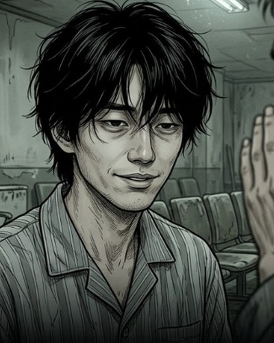
249번사례비 66만 원에 스스로 임상시험에 지원한 청년.영화 〈잡아먹히거나 먼저 씹어라〉첫 등장 5화 →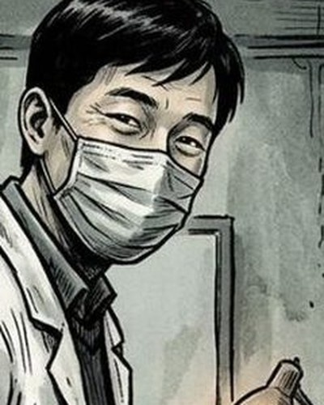
김박사실험실 안의 내부자. 그날 밤 USB 하나를 들고 나왔다.영화 〈잡아먹히거나 먼저 씹어라〉첫 등장 6화 →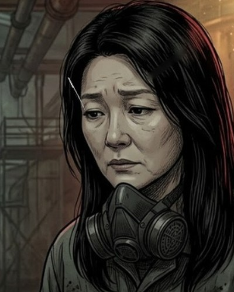
김미영승민·유림의 엄마. 어느 날 야간조에 나가 돌아오지 않았다.영화 〈기름도둑〉첫 등장 8화 →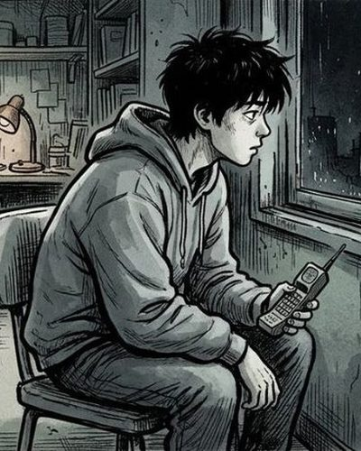
승민동생 손을 잡고 기름을 훔치는 오빠.영화 〈기름도둑〉첫 등장 8화 →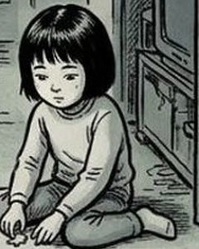
유림오빠를 따라다니는 노란 우비의 동생.영화 〈기름도둑〉첫 등장 8화 →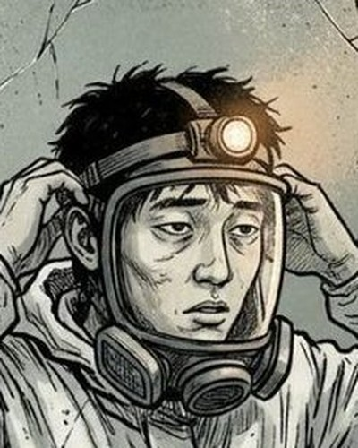
기화전화 속 목소리를 따라 밤 골목의 우편함을 여는 청년.영화 〈마스크〉첫 등장 10화 →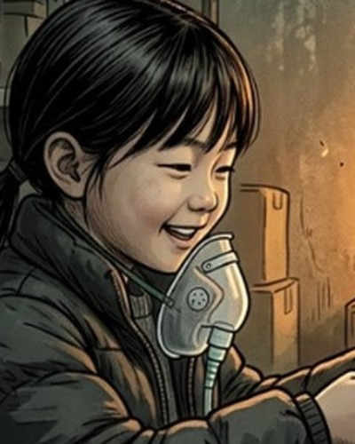
승주아저씨의 딸. 먼저 하늘로 올라가 아빠를 기다린다.영화 〈골디락스존 프로젝트〉첫 등장 13화 →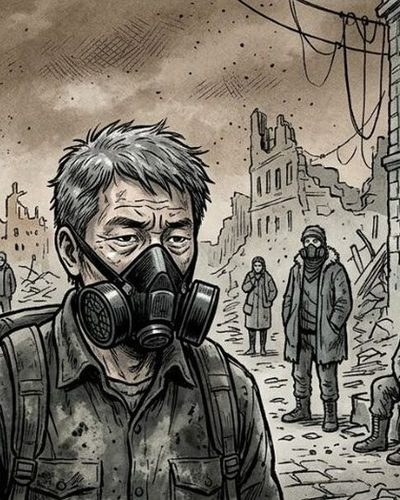
아저씨원래는 착한 경찰. 딸에게 가려면 호출기가 필요했다.영화 〈골디락스존 프로젝트〉첫 등장 13화 → 유진엄마가 남긴 마지막 말을 따라 호출기를 찾는 누나.영화 〈골디락스존 프로젝트〉첫 등장 9화 →
유진엄마가 남긴 마지막 말을 따라 호출기를 찾는 누나.영화 〈골디락스존 프로젝트〉첫 등장 9화 → 민호언제부턴가 누나보다 어려진, 늘 열한 살인 동생.영화 〈골디락스존 프로젝트〉첫 등장 9화 →
민호언제부턴가 누나보다 어려진, 늘 열한 살인 동생.영화 〈골디락스존 프로젝트〉첫 등장 9화 →- 홀로그램 상담원골디락스 실종 가족 상담 부스의 홀로그램. 십몇 년째 같은 미소, 같은 인사.영화 〈기름도둑〉첫 등장 4화 →
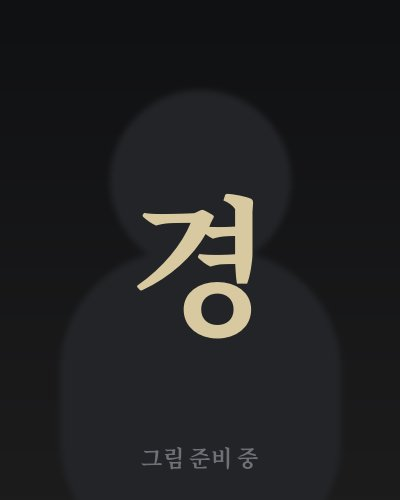
경찰1기름 구역 순찰 경찰. 규정에 예외는 없다고 믿는다.영화 〈기름도둑〉첫 등장 7화 → 경찰2머리가 희끗한 선배 경찰. 아이 앞에서는 쪼그려 앉는다.영화 〈기름도둑〉첫 등장 7화 →
경찰2머리가 희끗한 선배 경찰. 아이 앞에서는 쪼그려 앉는다.영화 〈기름도둑〉첫 등장 7화 →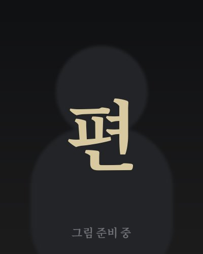
편의점 주인동네 편의점 주인. "어차피 버릴 거야."영화 〈기름도둑〉첫 등장 7화 →